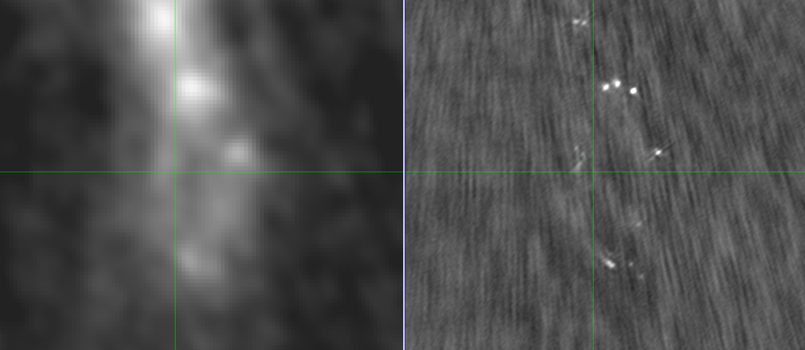

W51
With contributions from students:
- Desmond Jeff: PhD student
- Theo Richardson: PhD student
- Connor McClellan: REU 2018
- Josh Machado: REU 2019
- Danielle Bovie: REU 2020
Slides available at https://keflavich.github.io/talks/.
Use arrow keys to navigate.
Overview
Temperature Measurement
We used CH3OH rotational diagrams to measure hot core temperatures:


Desmond Jeff is applying the same technique in Sgr B2 DS
Temperature Measurement
H2CO image quality was too poor in Cycle 2 data.
Josh Machado fit NH3 temperatures using VLA
C-config data from Cara Battersby:


Temperature Measurement
Ammonia temperatures result in lower masses, and systematically different masses in different regimes,
than isothermal assumptions.
Dashed: 1-to-1
Dotted: M(NH3) = 0.25 M(20K)

TODO: Compare NH3, H2CO, and PPMAP temperatures
High-resolution: What's in a core?
Many cores are protostellar: they have hot, luminous stars inside. We have long-baseline (0.03-0.05") data showing this:

Danielle Bovie will cross-match the low- and high-resolution catalogues this summer